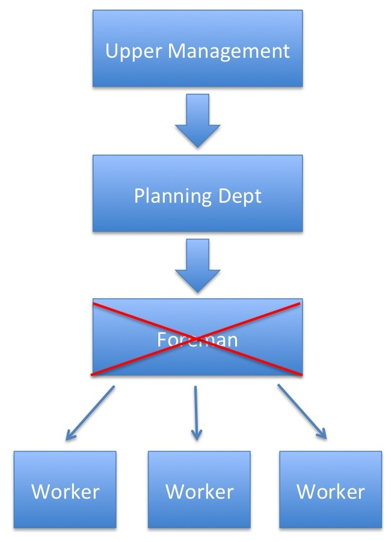
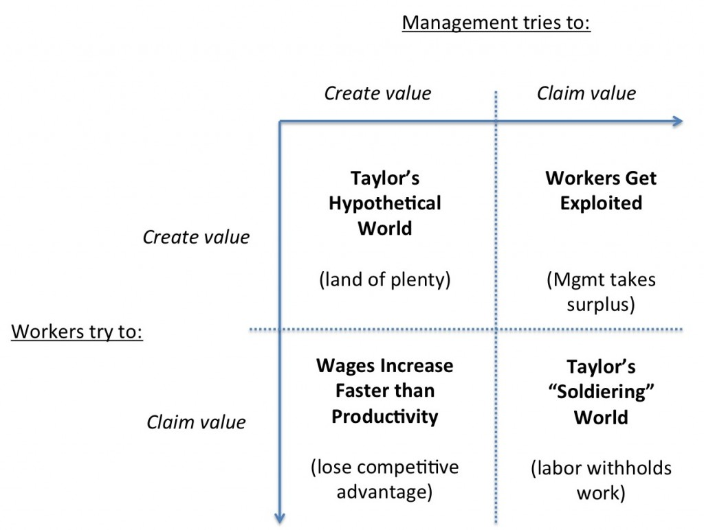

Scientific Management (CMC, Wednesday, Week 6)
coming-of-managerial-capitalismyear-twoWhat was "scientific management?"
A complete mental revolution...
Timing/work study + incentives to perform => spread across organization
"first class" vs. "second class" employees => lazy
Increasing the size of the pie, independent of how it gets divided (maybe...)
Taylor's goal: get rid of the foreman

{kind=link}
But lots of problems:
-- Foreman = advocate for workers, guardian of culture. Source of innovation (middle management produced M-Form in DuPont). Integrate new employees.
-- Who do workmen aspire to be? What does career progression look like?
-- Foreman = gatekeeper of information, source of quality control (when quality is not incredibly obvious)
-- Who supervises? Who settles disputes?
-- What replaces the foreman? Usually, unions.
Fairness problems.
Scientific management purports to increase the size of the pie without concern for how it gets divided. Early descriptions: labor keeps half of surplus.
But Schmidt example from Taylor's congressional testimony: output increases by 3.6x, wage to labor increases by 1.6x => gains tend to go to capital
More broadly, we tend to specialize the "Planning Department" in things like management consulting practices --- outsiders and senior management capture tons of rent from any improvement in productivity...
So how does this end?

Game theory: Can we get to top-left quartile?
-- Empirically, tendency for management to extract as much surplus as possible (push towards top-right quartile). Management is usually concentrated; labor tends to be fragmented...
-- Backlash from labor: organize/unionize and push towards bottom-left quartile.
{kind=link}